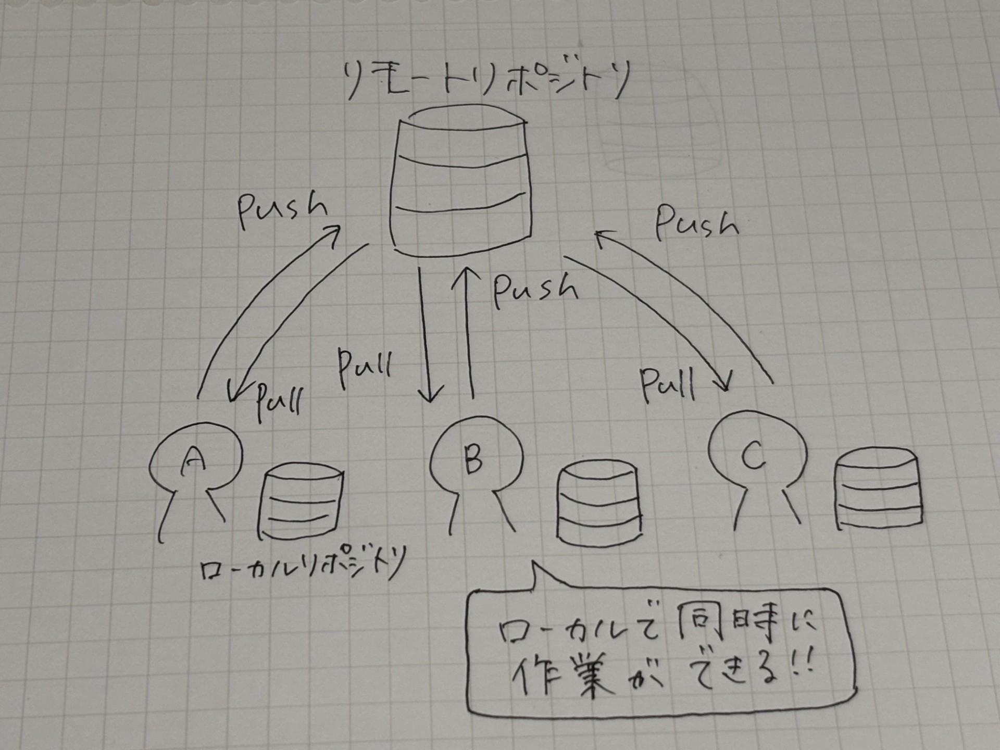

gitとは？
Gitとは世界で最も人気のあるバージョン管理システムのこと
バージョン管理システムとは...
コードに加えられた変更をリポジトリと言われるデータベースにバージョンとして記録するシステムのこと

↑リポジトリのイメージ図
gitでできること
①ファイルの変更履歴を記録できる
例えば、gitを利用しない場合は、

のように、変更前の状態を残すためにファイルを複製して管理することがある
このままだとファイル数が増え続け、管理が煩雑に！
gitを利用すると、1つのファイルを管理しながら「いつ・誰が・どのように変更したか」を履歴として記録できる
そのため、履歴を残すためにファイルを複製する必要がなくなり、過去の変更内容も簡単に確認できる
②以前の状態にすぐ戻せる